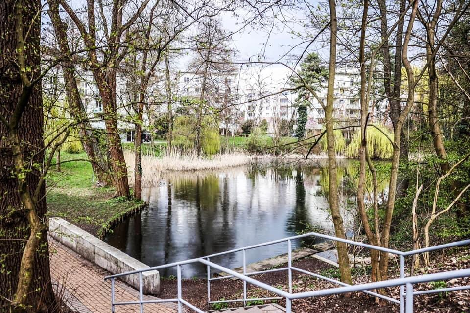

Ryby podľa @miasto_zielona_gora — Normy Jedál
Przy ulicy Waszczyka (między ul. Kożuchowską i Botaniczną) są dwa stawy, którymi opiekuje się Arkadiusz Orzeszko, leśniczy z Zakładu Gospodarki Mieszkaniowej. W zeszłym roku stawy zarybiono, wpuszczono tam 1000 sztuk ryb: karpia złocistego i królewskiego, lina, amura i karasia. Można tutaj łowić rybki bez karty wędkarskiej, którą wydaje Polski Związek Wędkarski. Warunek jest jednak jeden, złowione okazy trzeba wypuścić do wody! #MiastoZG #Waszczyka #stawy #ryby #lowimy #relaks
✅ Do końca maja przy łowisku powstaną drewniane kładki, postawione zostaną także ławeczki.
✅ Przy stawach staną dwa automaty z pokarmem dla kaczek.
👉 To jeszcze nie wszystko! W maju do stawu trafi 300 sztuk lina i 200 karpi.
Fot. @piotrjedzura